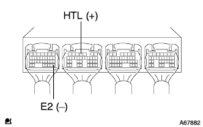
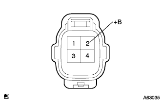
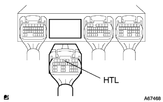
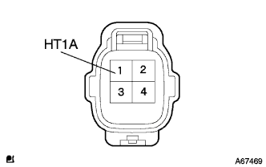

DTC P0135/21 O2 sensor heater system B1S1 |
| DTC No. | DTC detection conditions
| Inspection site |
| P0135/21 |
|
|
reference| Step 1 | Engine Control Computer Single Inspection |
Turn on the ignition switch.
|  |
The voltage between the connector terminals of the engine control composer is measured using a Toyota Electrical Tester.(The terminal array isreference)
| Measurement terminal (terminal name) | Reference value |
| B4 (HTL) ← → A28 (E2) | 8-14V |
|
| ||||
| NG | |
| Step 2 | Oxygen sensor single inspection |
reference)
|
| ||||
| OK | |
| Step 3 | Wire harness or connector inspection (power supply circuit) |
Separate the oxygien sensiticonector.
Turn on the ignition switch.
|  |
The terminal voltage of the oxidian ensenta connector of the oxyzes ensenza is measured using a Toyota Electrical Tester.
| Measurement terminal (terminal name) | Reference value |
| 2 (+B) ← → Body Earth | 10-14V |
|
| ||||
| OK | |
| Step 4 | Wire harness or connector inspection (engine controlled compilation-oxyde ensenza) |
|  |
Separate the connector B and oxyzes ensenas connectors B and oxyde Enseners.
|  |
Using Toyota Electrical Testers, check the conduction and short circuits between the engine control computers ← → oxyzes ensenas (terminal arrays are).reference).
| Measurement terminal (terminal name) Engine Control Company ← → Oxyzes Ensensa | standard |
| B4 (HTL) ← → 1 (HT1A) | There is no conduction, there is no short circuit between other terminals and between body earth |
|
| ||||
| OK | ||
| ||